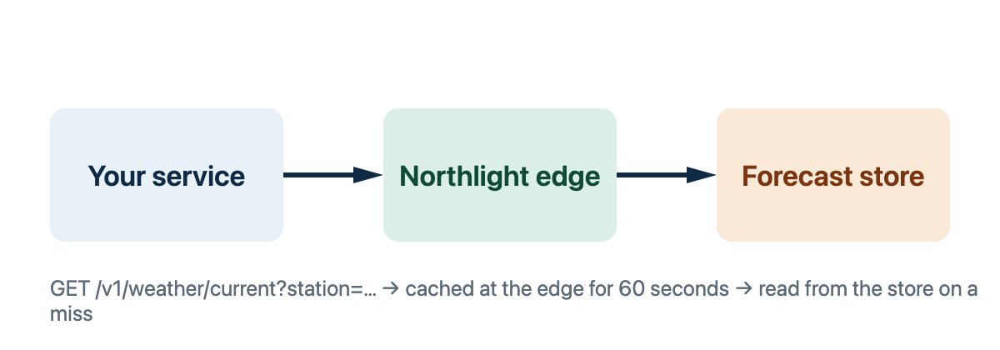

Northlight serves current conditions, short-range forecasts and observation
history for a network of weather stations along the Nordic coast. This handbook
is one set of Markdown documents that cudoc publishes three ways: as the site
you may be reading, as a bound PDF with a cover and a contents page, and as a
Word file with real styles. Every figure below is drawn from the reference
pages, so a correction there reaches this page too.
What the API provides
Every station reports temperature, wind, humidity, pressure and precipitation
on a fixed schedule, and the forecast model runs once an hour for every
station. The API exposes that data as four data sets, each behind one or two
endpoints.
Forecast horizons and history retention depend on the plan; see
Plans compared.
Endpoints at a glance
Each row is one section of the endpoint reference. The method and the path are
read from the table at the top of that section, and the description is its
first paragraph, so this table cannot drift from the reference.
Lists active severe-weather alerts for a region, relayed from the national
service.
Concepts
Stations and station codes
A station is one physical site with a fixed set of sensors. Every station has a
code of the form SITE-NN: a three-letter site code and a two-digit sequence
number, so a site with several masts has BGO-01, BGO-02 and so on. Codes
never change and are never reused; a station that stops reporting for good is
marked retired and keeps its code.
Code
Site
Elevation
Status
OSL-01
Oslo
94 m
active
BGO-01
Bergen
12 m
active
BGO-02
Bergen
320 m
maintenance
TRD-01
Trondheim
8 m
active
TOS-01
Tromsø
100 m
active
SVG-01
Stavanger
4 m
retired
The list above is illustrative; the
station directory is the source of truth for
the stations a key may read.
Observations and forecasts
An observation is a reading a station actually made, stamped with the instant
it was made. A forecast point is the model's expectation for a future instant,
stamped with that instant and with the model run that produced it. The two are
never mixed in one response: the current-conditions and history endpoints
return observations, and the forecast endpoints return forecast points.
Units
Every numeric field is returned in metric units unless the request asks for
units=imperial. Field names do not change with the unit system; only the
values and the units object in the response do, so a client can always read
the unit next to the value instead of assuming it.
Field
Metric
Imperial
temperature
°C
°F
windSpeed
m/s
mph
pressure
hPa
inHg
precipitation
mm
in
visibility
km
mi
Timestamps
Every instant is ISO 8601 in UTC with a Z suffix: observedAt on an
observation, validAt and issuedAt on a forecast, lastObservedAt on a
station. Converting to local time is the client's job; a station's IANA time
zone is in its detail record so the
conversion can be exact.
Versioning
The path prefix /v1 names the version. Additive changes, such as a new field,
a new optional parameter or a new endpoint, ship within /v1 without notice,
so a client must ignore fields it does not know. Any change to an existing
shape is announced in the release notes at least
ninety days before it takes effect, and the previous behaviour stays available
for that period.
Conventions
The handbook uses a small set of marks, and each means the same thing in the
site, the PDF and the Word file.
Mark
Meaning
A New, Beta or Latest badge after a heading
The section was added in the latest release, is in beta and may change on thirty days' notice, or describes the newest release.
A Note or Tip box
Background or a shortcut; skipping it costs nothing.
An Important, Warning or Caution box
Something that costs a key, a quota or data if ignored.
A Ready box
A checkpoint listing what a client needs before it moves on.
code in running text
A literal parameter, field, header or value.
Request and response samples are given as curl, Node.js and Python, and
every JSON sample is a real response for the station OSL-01.
Where to start
Read Getting started for a key, a
first request and a polling schedule.
Keep Rate limits open while you design that
schedule; the request costs table tells you what each call weighs.
Handle every code in Error codes before you
switch to a live key.
Four steps take you from nothing to a first forecast in production: a key, a
request, a look at the response, and a polling schedule that respects the
cache. The whole flow is plain HTTPS with a key in a header; there is no SDK to
install, and any HTTP client will do.

Get a key
Keys are issued per project and scoped to the stations a project may read. A
project is created in the Northlight console, and every key it issues carries
the project's plan and its station list. Two kinds of key exist:
Kind
Prefix
Purpose
Live
nlk_live_
Reads real stations and counts against the project's plan.
Test
nlk_test_
Reads the synthetic station TEST-01 only, returns fixed data and is never rate limited.
Start with a test key. TEST-01 reports the same reading every ten minutes and
a forecast that is always 12 °C and calm, so your parser can be checked against
known values before a live key is involved.
Requirements
Step
Prerequisites
Register
A project name
A billing contact
At least one station
Accepted terms
A callback URL
Rotate
The current key
Owner role
Revoke
Owner role
Store the key in your secret manager and expose it to your service as an
environment variable; the examples below read NORTHLIGHT_KEY.
Make a request New
Send the key in the Authorization header and ask for a station by its code:
Every response carries observedAt, the instant the station reported1,
and a units object naming the unit of every numeric field. The fields you
will use most:
Field
Type
Description
observedAt
string
When the station made the reading, ISO 8601 in UTC.
temperature
number
Air temperature two metres above ground.
windSpeed
number
Ten-minute mean wind speed; gusts are in windGust when the station has it.
windDirection
integer
Degrees clockwise from north, the direction the wind comes from.
conditions
string
One of clear, partly-cloudy, overcast, fog, rain, snow, sleet.
stale
boolean
true when the reading is older than fifteen minutes.
A missing station returns 404 with a machine-readable code, listed under
Error codes. Branch on the code; the message is
for humans and may change between releases.
Two response headers matter from the first request on. X-Limit-Minute and
X-Limit-Hour report how many requests remain in the current windows, and
ETag identifies the reading, so a later request can send If-None-Match and
receive a 304 that does not count against any window:
Current conditions are cached at the edge for sixty seconds, so polling faster
than that returns the same reading and spends your quota. The windows and the
headers that report them are in Rate limits; the
short version is below.
Windows
As a new integrator you share one rule: a key has a rolling minute window on
/v1/weather/current and a rolling hour window across all endpoints, the size
of each depends on the plan, and both counters are reported on every response.
A request that finds either window empty is answered with 429 rate_limited
and is not counted.
Header
Meaning
X-Limit-Minute
Requests left in the current minute window.
X-Limit-Hour
Requests left in the current hour window.
Retry-After
Seconds to wait, present only on a 429.
Windows are rolling, not aligned to the clock: a request made at 12:00:30
leaves the minute window at 12:01:30. A 304 answer to a conditional request
counts against neither window, and neither does a 429 or a 5xx.
A schedule that works for most services:
Poll /v1/weather/current once a minute per station, offset by a few
seconds per station so the requests do not all land at once.
Fetch the hourly forecast once an hour, shortly after the model run lands
at five past the hour.
Send If-None-Match on every poll and treat a 304 as "nothing new".
On a 429, wait for Retry-After; on a 503, back off as described in
Backoff.
Go to production
Before switching from the test key to a live one, check that your client:
reads units instead of assuming metric;
treats stale: true as a reason to show the reading's age, not to drop it;
handles every code in Error codes, including
station_retired, which arrives one day for any long-running client;
logs X-Request-Id from every response, so support can find the request;
ignores fields it does not know, since additive changes ship without notice
(see Versioning).
Footnotes
Always UTC, always with a Z suffix. Convert at the edge of your own
system, not in the data layer; the station's IANA time zone is in its
detail record. ↩
Endpoint reference
Each second-level section describes one endpoint. The first table of a section
is its basic information, which the overview page reads into a summary table;
the tables that follow describe parameters and the response. Error responses
share one shape and are listed separately under Error codes.
All endpoints are served from https://api.northlight.example and answer GET
only. Requests carry these headers:
Header
Required
Description
Authorization
yes
Bearer followed by a live or test key.
Accept
no
application/json, the only representation; any other value is answered with 406.
If-None-Match
no
The ETag of an earlier response; a 304 means it is still current.
X-Request-Id
no
Your own correlation id, echoed back; one is generated when absent.
List endpoints paginate with a cursor: a response that has more rows carries
page.next, and passing it as cursor returns the next page. Cursors are
opaque and expire after ten minutes.
Current conditions
Returns the latest observation from one station.
Method
Path
Auth
GET
/v1/weather/current
Bearer
Parameter
Type
Required
Description
station
string
yes
The station code, such as OSL-01. One station per request.
units
string
no
metric (default) or imperial.
The response is one observation object. Readings older than fifteen minutes
carry stale: true; a station that has not reported for six hours is answered
with 503 upstream_delayed instead.
Field
Type
Description
station
string
The station code as requested.
observedAt
string
The reading's instant, ISO 8601 in UTC.
temperature
number
Air temperature two metres above ground.
windSpeed
number
Ten-minute mean wind speed.
windGust
number
Highest three-second gust in the same ten minutes; absent without a gust sensor.
true when observedAt is more than fifteen minutes old.
units
object
The unit of every numeric field.
Responses are cached at the edge for sixty seconds and carry an ETag.
Hourly forecast
Returns up to 48 hourly forecast points for one station.
Method
Path
Auth
GET
/v1/forecast/hourly
Bearer
Parameter
Type
Required
Description
station
string
yes
The station code.
hours
integer
no
1 to 48, default 24. Values above 48 are clamped, not rejected.
units
string
no
metric (default) or imperial.
fields
list
no
temperature
wind
precipitation
Probability and amount
cloudCover
fields narrows the response to the named groups; without it every group is
returned. The response carries the model run that produced the points and the
points themselves:
Beyond 24 hours the Community plan receives no points; the other plans receive
up to 48. See Plans compared.
Daily forecast
Returns one forecast summary per calendar day, up to seven days ahead.
Method
Path
Auth
GET
/v1/forecast/daily
Bearer
Parameter
Type
Required
Description
station
string
yes
The station code.
days
integer
no
1 to 7, default 5. Days are calendar days in the station's time zone.
units
string
no
metric (default) or imperial.
Each day carries temperatureMin, temperatureMax, precipitationTotal,
precipitationProbability, the dominant conditions word, and sunrise and
sunset in UTC. The first day is today in the station's local time, which may
already be partly in the past; its minimum and maximum cover the whole day.
Observation history
Returns past observations from one station in a time range, oldest first.
Method
Path
Auth
GET
/v1/weather/history
Bearer
Parameter
Type
Required
Description
station
string
yes
The station code.
from
string
yes
Start of the range, ISO 8601, inclusive.
to
string
no
End of the range, exclusive; defaults to now.
step
string
no
10m (default), 1h or 1d. Coarser steps return means, with min and max for temperature.
limit
integer
no
Rows per page, 1 to 1,000, default 500.
cursor
string
no
page.next from the previous page.
How far back from may reach depends on the plan's history retention; a range
that starts earlier is answered with 400 range_too_wide rather than being
silently clipped. A range that spans more than 31 days at the 10m step is
rejected the same way; use 1h or 1d for long ranges.
Lists the stations a key may read, with their location and status.
Method
Path
Auth
GET
/v1/stations
Bearer
Parameter
Type
Required
Description
region
string
no
An ISO 3166-2 code to narrow the list, such as NO-03.
status
string
no
active, maintenance or retired.
limit
integer
no
Rows per page, 1 to 200, default 50.
cursor
string
no
page.next from the previous page.
Each row carries the code, the site name, coordinates, elevation, status and
the instant of the last observation. Retired stations are included only when
status=retired is asked for, so a client that lists stations sees them
disappear rather than fail.
Returns one station's metadata, including its sensors and time zone.
Method
Path
Auth
GET
/v1/stations/{code}
Bearer
Parameter
Type
Required
Description
code
string
yes
The station code, in the path.
The detail adds to the directory row the station's IANA time zone, its sensor
list with the make and the installation date of each, the date it first
reported and, for a retired station, the date it stopped. Metadata changes
rarely; cache it for a day.
Field
Type
Description
timezone
string
IANA zone name, such as Europe/Oslo.
sensors
list
temperature
wind
humidity
pressure
precipitation
since
string
The date the station first reported.
retiredAt
string
Present only for a retired station.
Weather alerts Beta
Lists active severe-weather alerts for a region, relayed from the national
service.
Method
Path
Auth
GET
/v1/alerts
Bearer
Parameter
Type
Required
Description
region
string
yes
An ISO 3166-2 code.
severity
string
no
yellow, orange or red; lower levels are excluded.
Each alert carries event (wind, rain, snow, ice or flood),
severity, onset, expires and a headline in the region's language. The
endpoint is in beta: its shape may change with thirty days' notice rather than
ninety, and it is available on the Business and Enterprise plans.
Rate limits
Limits protect the stations, which report on fixed schedules, from being asked
the same question thousands of times a minute. They are generous for any client
that respects the cache, and every response says where you stand, so a
well-behaved client never has to guess.
Windows
Every plan shares one rule: a key has a rolling minute window on
/v1/weather/current and a rolling hour window across all endpoints, the size
of each depends on the plan, and both counters are reported on every response.
A request that finds either window empty is answered with 429 rate_limited
and is not counted.
Header
Meaning
X-Limit-Minute
Requests left in the current minute window.
X-Limit-Hour
Requests left in the current hour window.
Retry-After
Seconds to wait, present only on a 429.
Windows are rolling, not aligned to the clock: a request made at 12:00:30
leaves the minute window at 12:01:30. A 304 answer to a conditional request
counts against neither window, and neither does a 429 or a 5xx.
Backoff
On a 429 or a 503, wait for Retry-After when present, otherwise double the
delay from one second up to thirty, and stop after five attempts. Add a random
fraction of a second to every delay so that several clients that failed
together do not retry together.
Current conditions are cached at the edge for sixty seconds, so a poll faster
than that returns the same reading and spends the minute window for nothing.
Forecasts are cached until the next model run, and history responses for a
day. Every cached response carries an ETag; sending it back as
If-None-Match turns an unchanged answer into a 304 that costs nothing.
Request costs
Not every request weighs the same against the hour window. Heavier queries cost
more, so a client that pages through history with small pages pays more than
one that asks for large pages.
X-Limit-Hour reports the remaining hour budget in cost units, not in
requests; X-Limit-Minute counts requests, since only one endpoint has a
minute window.
Plans compared
The plans differ in window size, forecast horizon, history retention and
support. The table has seven columns, so the paginated outputs put it on a
landscape page of its own.
Plan
Stations
Minute window
Hour window
Forecast hours
History
Support
Community
3
60
600
24
7 days
Forum
Team
25
120
6,000
48
90 days
Email, 2 days
Business
250
600
60,000
48
1 year
Email, 1 day
Enterprise
Custom
Custom
Custom
48
Custom
Named contact
Stations counts the distinct stations a project's keys may read, not the number
of keys; a project may hold up to ten keys. The minute window applies per key,
and the hour window applies to the project as a whole, so it is shared by every
key the project holds.
Changing plans
An upgrade takes effect within a minute and widens the current windows in
place, so a client that is being limited recovers without waiting for the hour
to roll over. A downgrade takes effect at the end of the billing period. History
older than the new retention stops being served at that point but is kept for
thirty days, so a downgrade made by mistake can be reversed without loss.
Change
Takes effect
Windows
History
Upgrade
Within a minute
Widened in place
Older history becomes available at once
Downgrade
End of the billing period
Narrowed at the next hour window
Kept for thirty days, then trimmed
Cancellation
End of the billing period
Live keys stop; test keys keep working
Exportable for thirty days
Appendix: measuring your own usage
Log the two limit headers with every response and chart the minimum per minute.
A flat line near zero means a client is polling faster than the sixty-second
cache refreshes; slow it down rather than raising the plan. One log line per
response is enough:
2026-09-22T06:00:01Z GET /v1/weather/current station=OSL-01 status=200 minute=57 hour=5931 request=req_7f3a9c2e
A query over a day of such lines shows where the window runs lowest:
SELECT date_trunc('minute', at) ASminute, min(minute_left) AS worst
FROM northlight_requests
WHEREat> now() -interval'1 day'GROUPBY1ORDERBY worst
LIMIT 20;
Three patterns account for almost every limit incident:
Synchronized polling. Every instance of a service wakes on the same
second. Offset instances by a few seconds each.
Retry storms. A 503 from one station is retried at once by every
instance. Use the backoff above; the jitter is not optional.
Missing conditional requests. A poll that ignores ETag pays for every
unchanged reading. Send If-None-Match.
Error codes
Every error response has the same shape: an error object with a code from
the table below, a human-readable message that may change between releases,
the requestId of the failed request and, for validation errors, a details
object naming the parameter. Branch on the code, never on the message.
{"error":{"code":"parameter_invalid","message":"hours must be an integer between 1 and 48","requestId":"req_7f3a9c2e","details":{"parameter":"hours","received":"0"}}}
Field
Type
Description
code
string
One of the codes below. Stable; treat unknown codes as errors.
message
string
For humans and logs. Not stable.
requestId
string
Quote it to support. Also sent as the X-Request-Id header.
details
object
Present on 400 errors; names the parameter and the value seen.
All codes
Code
HTTP
Meaning
Retry
parameter_missing
400
A required parameter is absent.
No
parameter_invalid
400
A parameter has the wrong type or is out of range.
No
range_too_wide
400
A history range is too long for its step or starts before the retention.
No
key_invalid
401
The Authorization header is missing or malformed.
No
key_revoked
401
The key was revoked or rotated.
No
key_scope
403
The key's project does not cover the station.
No
plan_required
403
The endpoint or the horizon needs a higher plan.
No
station_unknown
404
No station has that code.
No
not_acceptable
406
Accept names a representation other than JSON.
No
station_retired
410
The station stopped reporting permanently.
No
rate_limited
429
The window is exhausted.
After Retry-After
upstream_delayed
503
The station has not reported in time.
With backoff
maintenance
503
The API is being upgraded; announced in the release notes.
After Retry-After
Request errors
A 400 describes a request that can be corrected before it is sent again. The
details object names the parameter and repeats the value the server saw, so
nothing has to be parsed out of the message. Validate ranges before sending:
hours is 1 to 48, days 1 to 7, limit 1 to 1,000 for history and 1 to 200
for the directory, and step is one of 10m, 1h and 1d.
range_too_wide is the one 400 that depends on the plan. It is returned when
from is earlier than the plan's history retention allows, and when a range at
the 10m step spans more than 31 days. The details object carries
earliest, the first instant the plan can serve, so a client can clamp its
range and retry once.
Authorization errors
A 401 means the key itself was not accepted. key_invalid is almost always a
formatting problem: a missing Bearer prefix, a key pasted with a trailing
newline from a secrets file, or a test key sent to a live station. key_revoked
follows a rotation or a revocation and is permanent for that key; deploy the
new key everywhere before revoking the old one.
A 403 means the key is fine but the request is not. key_scope says the
station is not in the key's project; add it in the console rather than creating
a second project. plan_required says the endpoint or the horizon is not in
the plan, and its details.plan names the lowest plan that allows it.
Availability errors
A 503 is temporary by definition. upstream_delayed means the station has
been silent for more than six hours; the station directory shows the same in
lastObservedAt, and the station usually returns within a day. maintenance
is rare and announced in the release notes
beforehand, and it always carries Retry-After.
A client that sorts codes into three groups covers every case:
Changes to the API, newest first. Dates are the day a change reached every
region. Additive changes are listed for information; changes that alter an
existing shape are announced under Upcoming changes at least
ninety days before they take effect.
Upcoming changes
Change
Announced
Effective
Affects
The windMs and temperatureC aliases leave current conditions; read windSpeed, temperature and units.
2026-09-15
2026-12-15
Current conditions, history
Weather alerts leave beta; headline becomes an object with one entry per language.
2026-09-15
2026-10-15
Weather alerts
Cursor expiry shortens from one hour to ten minutes.
2026-07-02
2026-10-01
Station directory, history
2026-09-15 Latest
fields on the hourly forecast accepts precipitation, returning
probability and expected amount, and cloudCover.
→ Hourly forecast
X-Limit-Hour is now sent on every response, not only when the minute
window is low.
The hour window is charged in cost units; existing budgets were converted so
that no client pays more than before.
→ Request costs
The weather alerts endpoint opens in beta for the Business and Enterprise
plans. → Weather alerts
The synthetic station TEST-01 accepts simulate to reproduce any error
code. → Error codes
2026-07-02
Readings older than fifteen minutes carry stale: true instead of being
withheld.
The station_retired error replaces a generic 404 for stations that
stopped reporting permanently.
Observation history accepts step=1d, returning daily means with the
minimum and maximum temperature.
Station detail returns timezone, sensors and since.
2026-05-20
Daily forecast endpoint added, up to seven days ahead.
→ Daily forecast
Every cached response carries an ETag, and a 304 answer counts against
no window. → Caching
The station directory paginates with limit up to 200 rows and a
page.next cursor.
2026-04-10
First public release of /v1: current conditions, hourly forecast,
observation history and the station directory.
Community, Team and Business plans; Enterprise by arrangement.